House-scale repaint
Art approval only. Photos remain private and are excluded from this package. Nothing is placed in the game. Upstairs follows after approval.
Manifest · Validation · Notes · Painting prompts
Selected imagegen prompts
Rooms in place
The dining and desk rectangles overlap, so their main mock-up shows a shared room. Native art and the 56x60 hero stay at 1x. North-wall art extends above the floor rect. The 136px hall remains clear; a 224px hall needs a layout change.
living
Rami layout intent, grid-snapped and tidied; 3x nearest-neighbor. Green centers mark verified 96px clearance. No runtime placement.
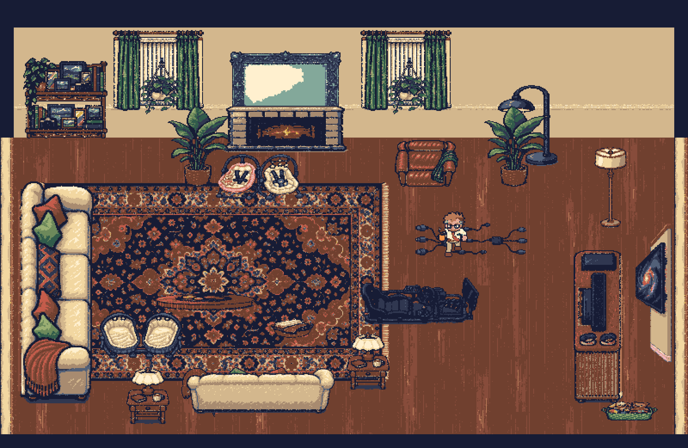
Footprints and path overlay
dining-desk-shared
Rami layout intent, grid-snapped and tidied; 3x nearest-neighbor. Green centers mark verified 96px clearance. No runtime placement.
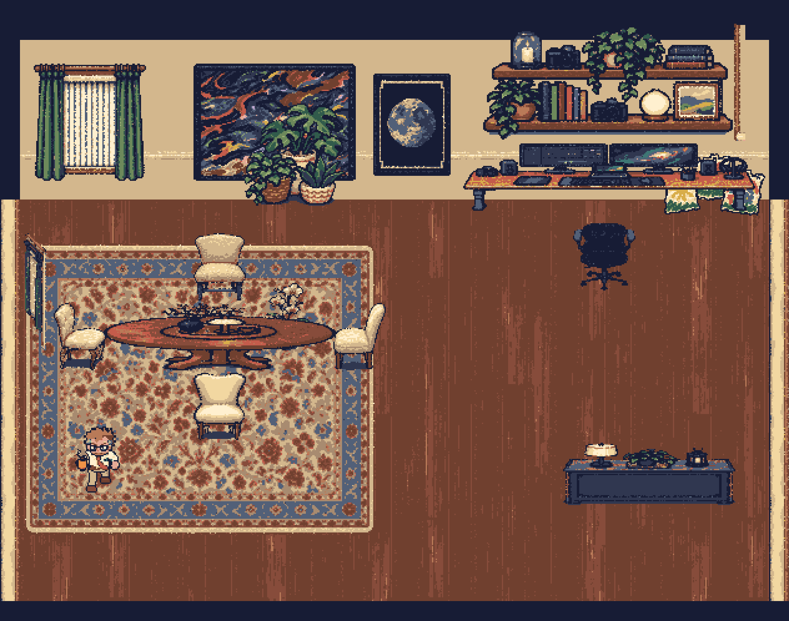
Footprints and path overlay
kitchen
Rami layout intent, grid-snapped and tidied; 3x nearest-neighbor. Green centers mark verified 96px clearance. No runtime placement.
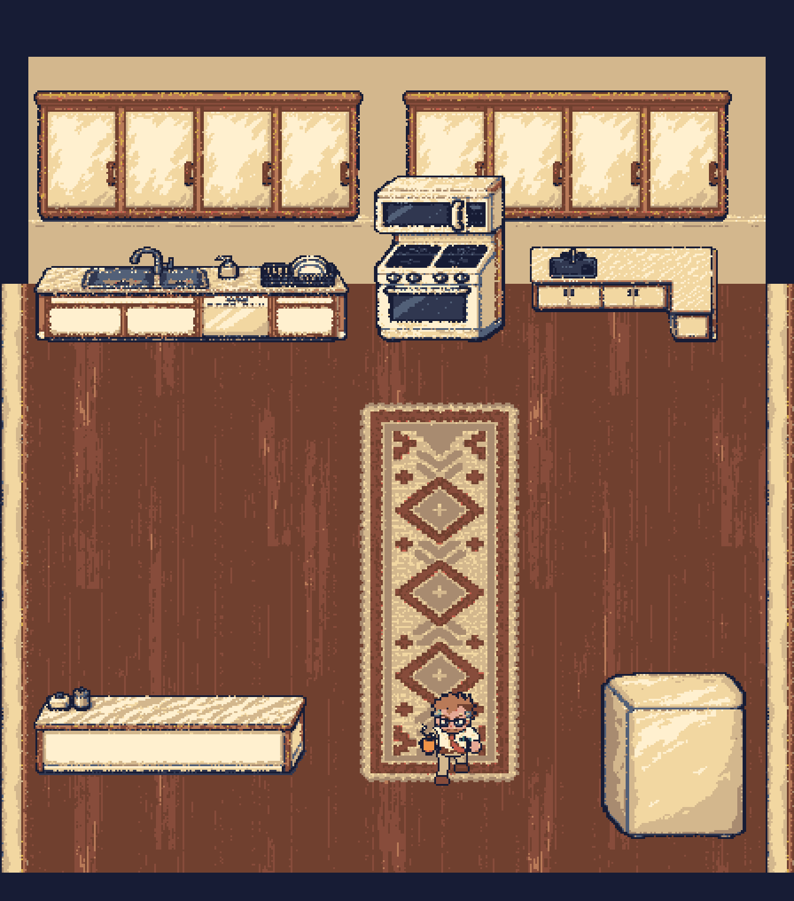
Footprints and path overlay
entry
Rami layout intent, grid-snapped and tidied; 3x nearest-neighbor. Green centers mark verified 96px clearance. No runtime placement.
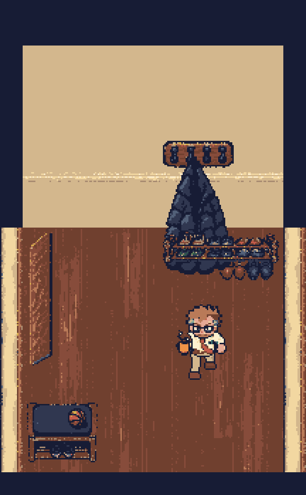
Footprints and path overlay
laundry-closet
Rami layout intent, grid-snapped and tidied; 3x nearest-neighbor. Green centers mark verified 96px clearance. No runtime placement.
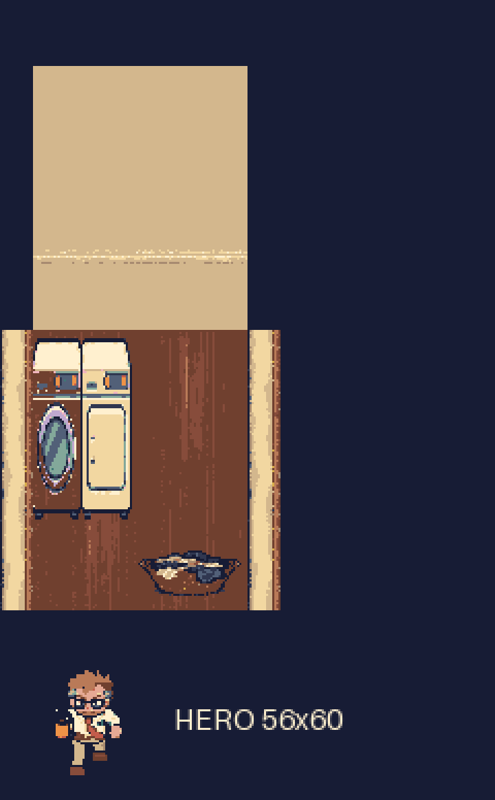
Footprints and path overlay
Every piece at 1x
photo-ledges
104 x 100 · WALK-THROUGH · wall-mounted
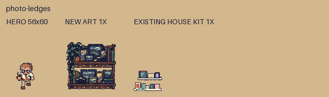
Native PNG · Feet and footprint overlay
tile-fireplace
152 x 60 · WALL · furniture
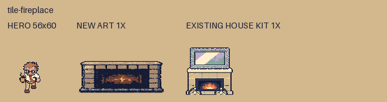
Native PNG · Feet and footprint overlay
ornate-silver-mirror
136 x 88 · WALK-THROUGH · wall-mounted
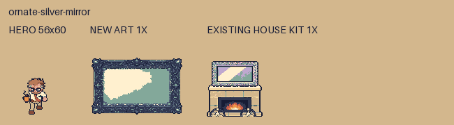
Native PNG · Feet and footprint overlay
window-olive-curtains
112 x 100 · WALK-THROUGH · wall-mounted
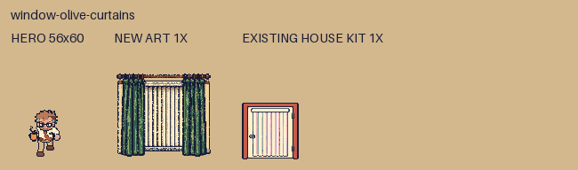
Native PNG · Feet and footprint overlay
galaxy-wall-tv
48 x 168 · WALK-THROUGH · wall-mounted
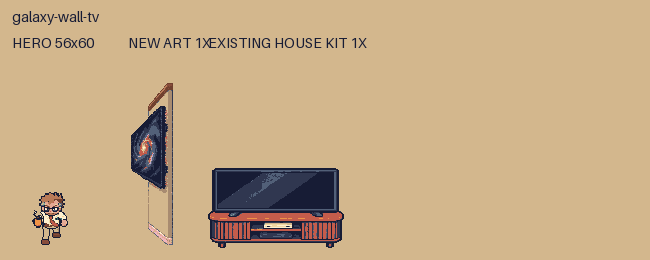
Native PNG · Feet and footprint overlay
fluted-media-console
64 x 184 · WALL · furniture
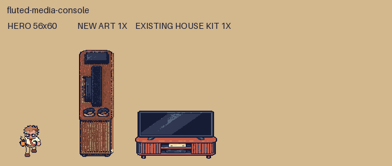
Native PNG · Feet and footprint overlay
cream-sofa
96 x 264 · WALL · furniture
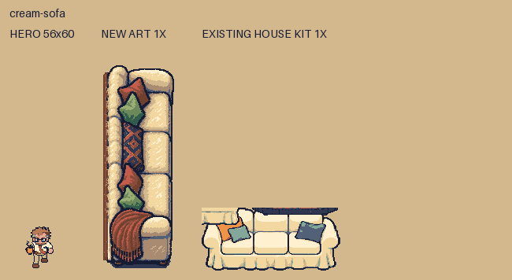
Native PNG · Feet and footprint overlay
leather-recliner
80 x 60 · WALL · furniture
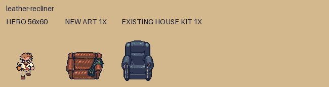
Native PNG · Feet and footprint overlay
round-coffee-table
124 x 28 · WALL · furniture
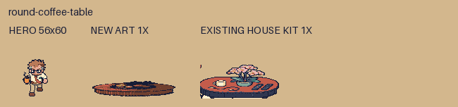
Native PNG · Feet and footprint overlay
persian-living-rug
416 x 240 · WALK-THROUGH · ground
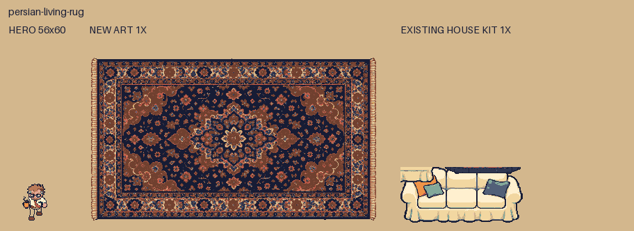
Native PNG · Feet and footprint overlay
potted-pothos
56 x 72 · WALK-THROUGH · wall-mounted
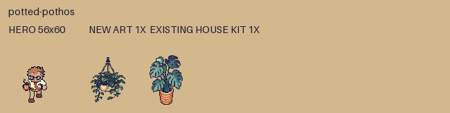
Native PNG · Feet and footprint overlay
bird-of-paradise
80 x 100 · WALL · furniture
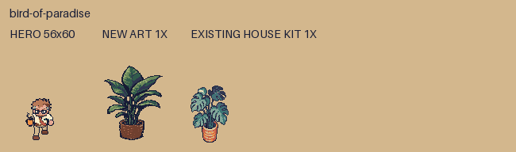
Native PNG · Feet and footprint overlay
drum-floor-lamp
44 x 100 · WALL · furniture
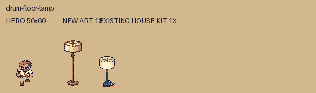
Native PNG · Feet and footprint overlay
arched-floor-lamp
76 x 100 · WALL · furniture
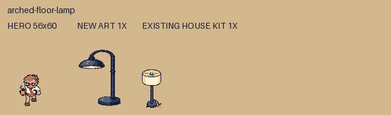
Native PNG · Feet and footprint overlay
racing-sim-rig
144 x 60 · WALL · furniture
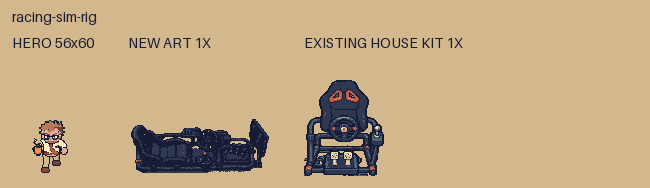
Native PNG · Feet and footprint overlay
sim-cables
136 x 44 · WALK-THROUGH · ground
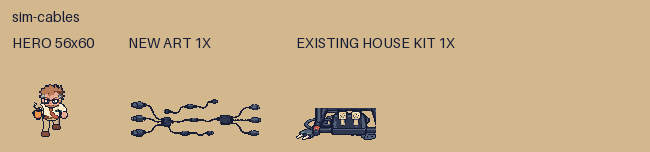
Native PNG · Feet and footprint overlay
baby-swing-pink
60 x 60 · WALL · furniture
Native PNG · Feet and footprint overlay
baby-swing-grey
60 x 60 · WALL · furniture
Native PNG · Feet and footprint overlay
blanket-basket
56 x 28 · WALL · furniture
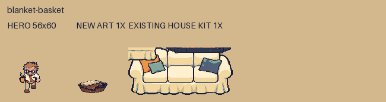
Native PNG · Feet and footprint overlay
snack-bag
32 x 24 · WALK-THROUGH · ground
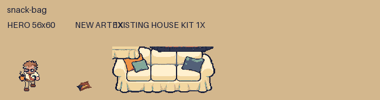
Native PNG · Feet and footprint overlay
round-dining-table
192 x 60 · WALL · furniture
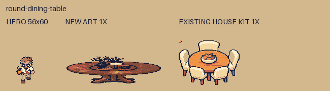
Native PNG · Feet and footprint overlay
dining-chair-north
48 x 60 · WALL · furniture
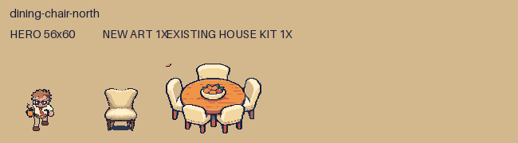
Native PNG · Feet and footprint overlay
dining-chair-south
48 x 60 · WALL · furniture
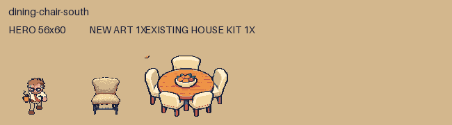
Native PNG · Feet and footprint overlay
dining-chair-east
48 x 60 · WALL · furniture
Native PNG · Feet and footprint overlay
dining-chair-west
48 x 60 · WALL · furniture
Native PNG · Feet and footprint overlay
dining-rug
288 x 240 · WALK-THROUGH · ground
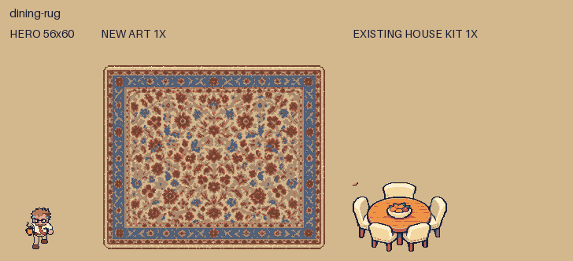
Native PNG · Feet and footprint overlay
corner-computer-desk
240 x 60 · WALL · furniture
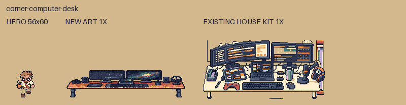
Native PNG · Feet and footprint overlay
camera-book-shelves
216 x 100 · WALK-THROUGH · wall-mounted
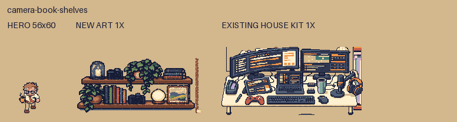
Native PNG · Feet and footprint overlay
mesh-office-chair
56 x 60 · WALL · furniture
Native PNG · Feet and footprint overlay
moon-print
68 x 88 · WALK-THROUGH · wall-mounted
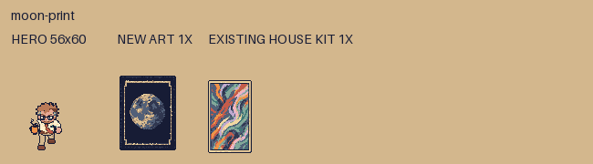
Native PNG · Feet and footprint overlay
kids-drawings
88 x 56 · WALK-THROUGH · wall-mounted
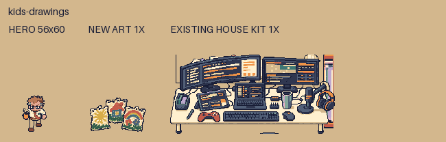
Native PNG · Feet and footprint overlay
electric-console-east
144 x 56 · WALL · furniture
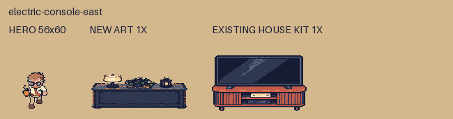
Native PNG · Feet and footprint overlay
abstract-wall-painting
136 x 100 · WALK-THROUGH · wall-mounted
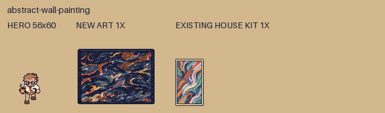
Native PNG · Feet and footprint overlay
potted-orchid
44 x 60 · WALL · furniture
Native PNG · Feet and footprint overlay
white-oak-sink-counter
184 x 60 · WALL · furniture
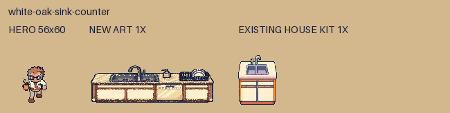
Native PNG · Feet and footprint overlay
white-oak-upper-cabinets
192 x 80 · WALK-THROUGH · wall-mounted
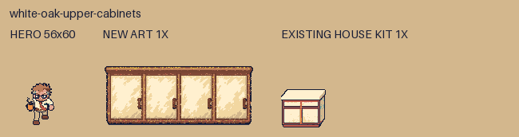
Native PNG · Feet and footprint overlay
stove-microwave
80 x 100 · WALL · furniture
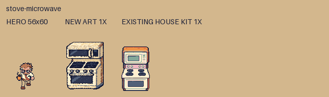
Native PNG · Feet and footprint overlay
magnet-fridge
88 x 100 · WALL · furniture
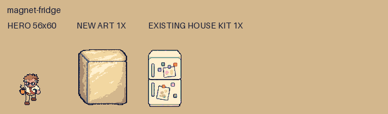
Native PNG · Feet and footprint overlay
kitchen-counter-west
160 x 56 · WALL · furniture
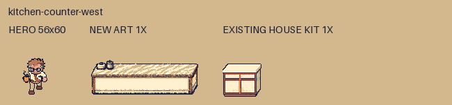
Native PNG · Feet and footprint overlay
kitchen-counter-east
112 x 60 · WALL · furniture
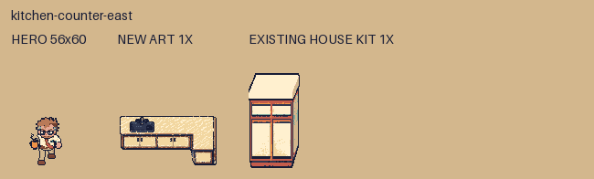
Native PNG · Feet and footprint overlay
kitchen-runner
96 x 220 · WALK-THROUGH · ground
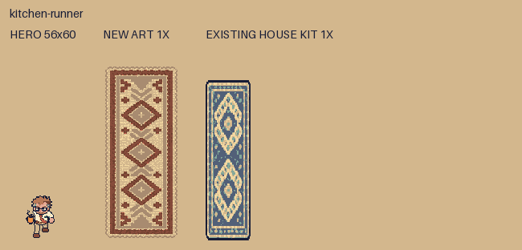
Native PNG · Feet and footprint overlay
storage-bench-west
56 x 48 · WALL · furniture
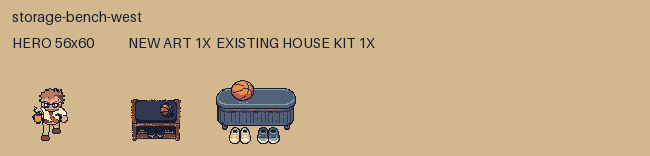
Native PNG · Feet and footprint overlay
shoe-pairs
44 x 32 · WALK-THROUGH · ground
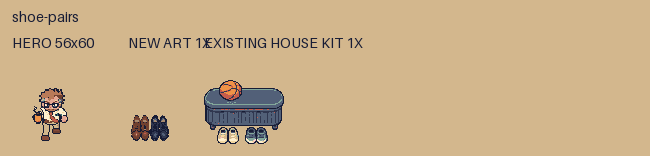
Native PNG · Feet and footprint overlay
coat-hooks-jacket
56 x 100 · WALK-THROUGH · wall-mounted
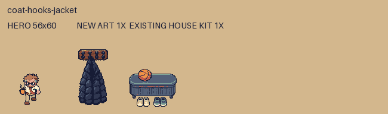
Native PNG · Feet and footprint overlay
oak-door-side
24 x 100 · WALK-THROUGH · wall-mounted
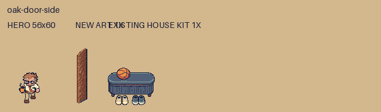
Native PNG · Feet and footprint overlay
side-wall-strip
16 x 256 · WALK-THROUGH · wall-mounted
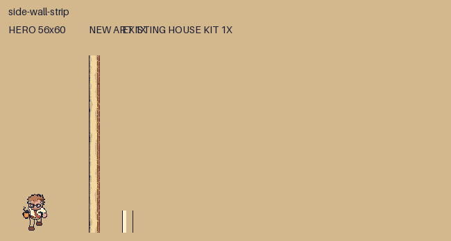
Native PNG · Feet and footprint overlay
window-blinds-east
24 x 100 · WALK-THROUGH · wall-mounted
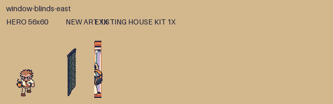
Native PNG · Feet and footprint overlay
side-table-lamp
56 x 72 · WALL · furniture
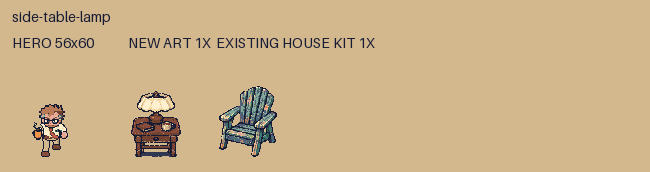
Native PNG · Feet and footprint overlay
twins-toy-bin
72 x 28 · WALL · furniture
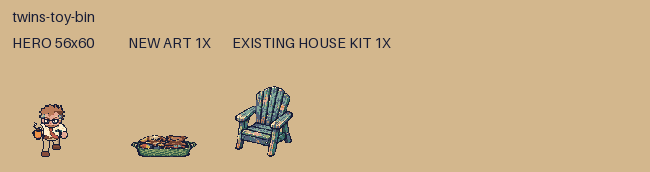
Native PNG · Feet and footprint overlay
houseplant-cluster
88 x 88 · WALL · furniture
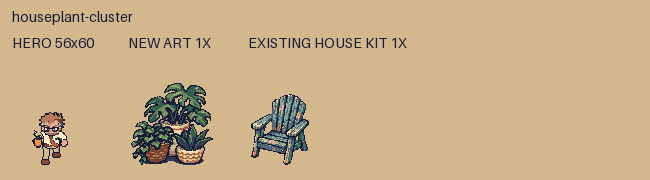
Native PNG · Feet and footprint overlay
shoe-rack
88 x 28 · WALL · furniture
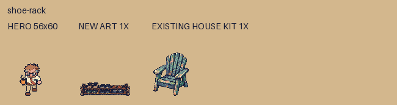
Native PNG · Feet and footprint overlay
laundry-basket
56 x 28 · WALL · furniture
Native PNG · Feet and footprint overlay
south-love-seat
184 x 60 · WALL · furniture
Native PNG · Feet and footprint overlay
twin-bassinets
104 x 60 · WALL · furniture
Native PNG · Feet and footprint overlay
window-blinds-north
96 x 100 · WALK-THROUGH · wall-mounted
Native PNG · Feet and footprint overlay
window-blinds-west
24 x 100 · WALK-THROUGH · wall-mounted
Native PNG · Feet and footprint overlay